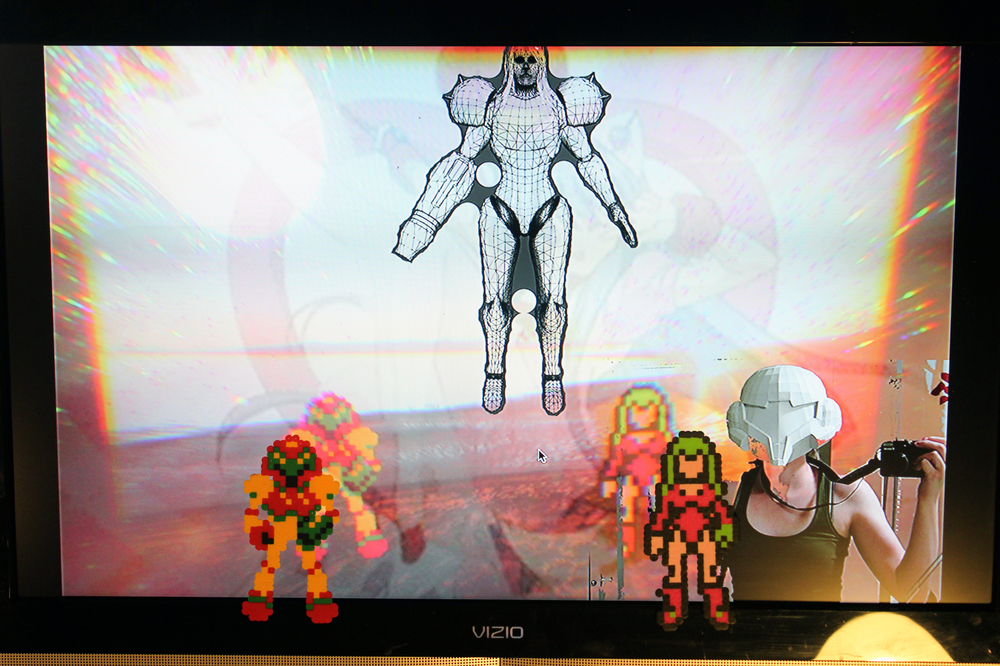
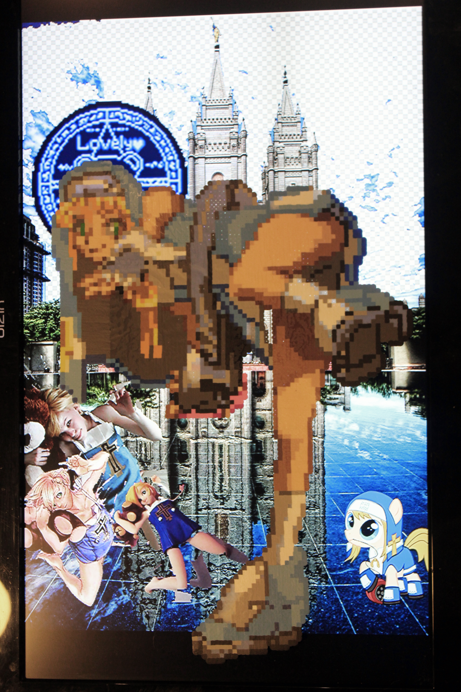
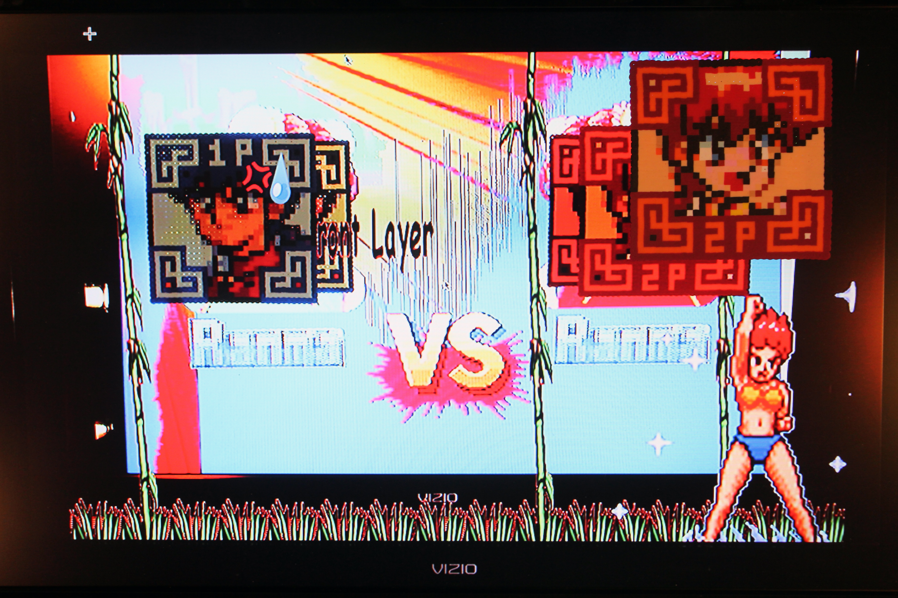

Character Select Screen




Before the Internet and
oblivious to zine culture, my connection to an elsewhere beyond suburbia came through
anime and video games. Video games have an amazing, and largely underutilized, potential
for the meaningful exploration of other subjectivities. Through playing there is a
doubling of experience where the player both acts as another and watches the game
narrative unfold before them. This was not lost on me growing up and I took every chance I
could to explore my nascent feminine self through the selection of female characters,
although this option wasn’t, and isn’t, available enough. It felt okay to be her, whoever
she was, because the ability to choose had been coded in. The permission was glowing on
screen in front of me.
Graphic sprites are so called because of the way they float above a
fixed, rendered environment without affecting it. They are displaced from the world they
inhabit, like a changeling or a ghost. Certainly this is a metaphor many adolescents can
identify with, although feeling misgendered exacerbates things. Samus Aran, clad in stoic
full-body exoskeletal armor was the first sprite with whom I identified. I was captivated
by Metroid’s open, non-linear world. The planet was full of mysterious puzzles and
seemingly inaccessible spaces to which you would later return with new tools and a new
suit of clothes, discovering vast new territories for exploration (an argument for a
broader wardrobe if ever there was one). The end game unmasking of Samus as She was both a
kind of fanservice and its opposite.
Fanservice is tricky and tawdry. It is the gratuitous
sexualizing of a fictional character, ostensibly to please an audience. Cammy, my
Streetfighter self since Capcom gave me a choice beyond Chun-Li, is made of fanservice. As
a Doll, a cadre of brainwashed, all-female bodyguards for the villainous M. Bison, she was
designed as a vessel for Bison’s consciousness once his angry-dude energy finally
annihilated his birth body. She manages to break her brogramming, however, and reinvent
herself. Fanservice occurs strangely often in the midst of these sorts of Magical Girl
Transformations: the moment in a fight where the hero calls on her higher power to remake
her into someone that can rise to the challenge at hand. Street clothes dissolve away into
rose petals of pure light that then become power armor, or a tactical princess dress, or
what-have-you. Serious next level shit. Vulnerable for a moment, you unzip the archive and
change skins into your final form.
The first time I recall seeing cartoon breasts was
during the awkward, though still magical, transformations in Ranma ½. Through an
accidental baptism in a cursed spring Ranma changes genders constantly, hence the ½. Many
of us are lucky if we get to change once, and once is all we want. Ranma was always
brawling and looking for love, but maybe should have just taken some personal time. And
then there is Bridget, the quintessential trap, who was raised as a girl to avoid being
sacrificed due to a prohibition against same sex twins in the game Guilty Gear. As with
Samus, Bridget’s denouement inverts our expectations, though like Ranma he turns out to be
vexingly strident in asserting his biologically assigned gender, going so far as to wear a
♂ symbol stamped across his headband in contradiction to the skimpy catholic nun outfit he
persists in wearing. Sporting an oversized handcuff shaped hula-hoop as a belt indicates
further, perhaps catholically induced, issues of personal acceptance.
I struggle, both
with these characters’ objectification and the proclamations of “no homo” in their
storylines (despite the nods to fluidity), but I suppose ultimately I would rather see
genderqueer characters represented problematically than not at all. Recreating these
sprites in the clunky medium of Perler beads provides a slow, hard look beyond the clichés
of these characters into what more comprises them. It provides a moment of pause to find
out where we reside in one another. Through the virtual, and the fictional, we can find
characters we need in our lives but who are not present, and hopefully glimpse something
of ourselves that we can bring back with us.
(Images and accompanying text appeared in the publication New World Unltd, Northward Equinox 2015, published jointly by GWC Investigators and Social Malpractice Publishing.)